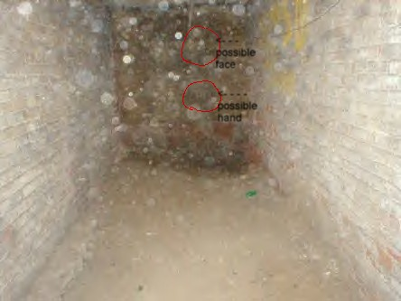

|

Jenn Schmidt, a VERY helpful website visitor, sent me the photo above and the following list of observations she made while analyzing my Prospect Place photos:
Exterior Mansion
- 4th pic down- "Mansion at night": bright orb near roof of house
- 14th pic down- "Mansion at night": possible orb below window right of door
Basement Photos
- "Basement": lots of orbs (or dust). possible eye on floor (slight right of center, shown as bright white w/ little gray)
- "Area where woman's body was kept": lots of orbs but through them, dead center I see a hand & possibly a head. She looks like she may be sitting.
- "Graffiti on wall": orb underneath word 'Rise'
- "Cistern": orb on brick to right (too circled to be just spot on brick)- orbs in 2nd pic of cistern
- "Hole in wall": could be far-fetched but did you see an eye in that hole? The size of it?
- "Crawlspace": possible red eye on wall & white orb on black plastic
1st Floor Photos
- "Dining room doors": center door, I see an orb center mass
- "Stairs to ballroom": orb on right of pic. Tell me, why is the top of the stairs blurred (or is that just the wall?)
Ballroom & Widow's Walk
- "Ballroom": orb on floor, little right of center
- "Windows in ballroom": orb on supports on right of pic
Servant's Quarters
- "Room w/ haint blue paint": orb on window
- "Room in servant's quarters": 2 orbs on window (1 solid white, 1 faint gray)
- "Door to living room": window to the right (can only see about 1/4 of it)- 2 orbs spotted near bottom of window (about center of doorway)
Exterior Barn
- "Barn at night": obvious scattered orbs (or dust)
- "Guard dog's glowing eyes": just gotta say that's a cool pic. I also have to ask would the dog's eyes glow so much as to create a reflection or flash on the ground right below the eyes? Or is that the moon reflecting off a puddle, maybe.
Interior Barn
"Beam where people were hung": scatter of slight orbs (dust)
Ghost Hunt Photos 11/14/03
- 2nd down- "Strange line in cemetery.": thick blurred circle by tree (almost center of pic) and 2 blurred orbs in distance (small on top left and lower right)
- 7th down- "Ballroom": white orb on floor, left side of pic near door. Blurred orbs near rafters (could be wrong)
- 8th down- "Randy sitting on steps": faint orb on black plastic tubing (long one). I point this out because 1/2 the orb is on the wall & 1/2 on the tube. Could Randy had a quick visitor?
- 9th down- "Randy taking a picture": orbs behind Randy, possibly.
- 14th down- "Another photo cemetery at night": Notice in this pic no strange line. That is obvious. However, no orbs in this one but a few blurred in the distance of the other cemetary pic. Too far fetched or too weird?
- 17th down- "Stairs to ballroom": look to alcove or right. part of plastic pile or something else? spot on stairs is a spot or faint capture? (To me, looks like spot but figured I'd point it out anyway.)
- 19th down- "Marsha, Randy, Kate & Joe": light on wall coming from where? Possible camera flash? Also, faint orb at top of hallway. Lightbulb, spirit or something else?
Back to the main Prospect Place page
Where do you want to go? Select your destination:
|